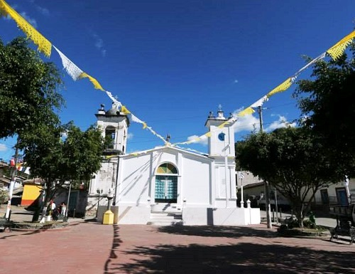
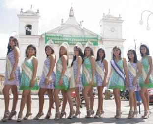

Cabañas es un departamento de la zona paracentral de El Salvador. Su cabecera departamental es Sensuntepeque. Esta región tiene muchas reservas naturales. El departamento fue nombrado en honor del político centroamericanista hondureño, José Trinidad Cabañas.
Sensuntepeque es una ciudad de El Salvador, cabecera del departamento de Cabañas, ubicada en la zona paracentral del país. Está situada a 83 km al noreste de la capital, San Salvador, y a una altitud de 820 msnm.
Tiene una población de 45 mil habitantes, y una extensión territorial de 306,33 km². Está subdividido geográficamente en 22 cantones y 236 caseríos en la zona rural. La zona urbana se divide en cuatro populosos barrios y 28 colonias.
Hay dos festividades patronales que se celebran en Sensuntepeque: Del 24 de noviembre al 5 de diciembre en honor a Santa Bárbara. 15 de agosto Fiesta de la Virgen del Tránsito. En ambas celebraciones son destacadas por su religiosidad, que van acompañadas de la algaravilla, los cohetes de de vara, juegos mecánicos, las carrozas, y actualmente los carnavales que llenan de alegría a propios y visitantes.
